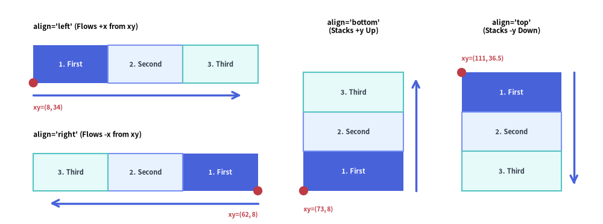
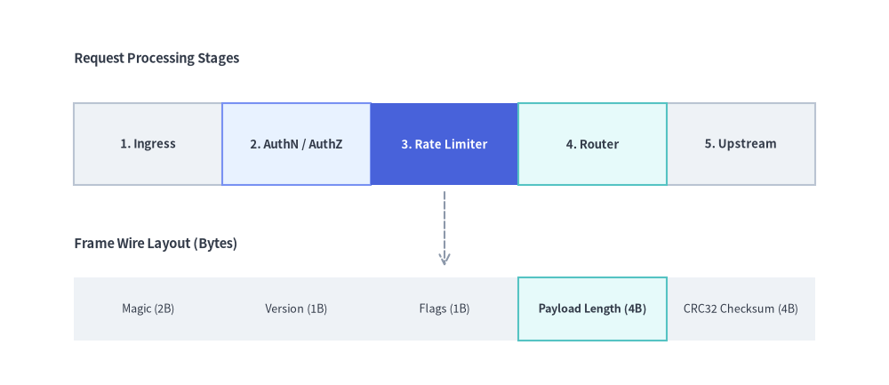
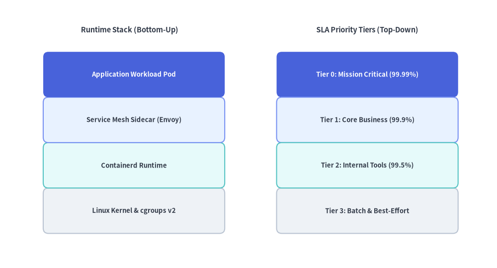

BoxList
The BoxList component renders contiguous linear sequences of rectangular cards along a horizontal or vertical axis.
Custom-styled items are automatically rendered in a second pass so their borders cleanly overlay adjacent default boxes—making BoxList ideal for memory/packet layouts, stage sequences, and vertical feature stacks.

Source Code
from drawlib.canvas import save, setup
from drawlib.icons import phosphor
from drawlib.lines import line
from drawlib.shapes import circle
from drawlib.smartarts import BoxList
from drawlib.styles import Styles
from drawlib.text import text
setup(width=130, height=56)
bl = BoxList(
style=Styles.Neutral,
text_style=Styles.DarkBold.patch(text_size=10.0),
)
bl.add("1. First", style=Styles.PrimaryFlat, text_style=Styles.WhiteBold.patch(text_size=10.0))
bl.add("2. Second", style=Styles.PrimaryNeutral)
bl.add("3. Third", style=Styles.SecondaryNeutral)
# 1. Top-Left Panel: align="left" (flows +x from bottom-left xy)
phosphor.arrow_circle_right(xy=(5.0, 48.0), width=3.4, style=Styles.PrimaryFlat)
text((9.5, 49.7), "align='left' (Flows +x from xy)", style=Styles.BlackBold.patch(text_size=10.0, halign="left"))
bl.draw(xy=(5.0, 35.0), box_width=17.5, box_height=9.5, align="left")
line((5.0, 32.0), (57.5, 32.0), arrow_head="->", style=Styles.PrimaryBold)
circle((5.0, 35.0), radius=1.1, style=Styles.DangerFlat)
text((5.0, 28.5), "xy=(5, 35)", style=Styles.DangerBold.patch(text_size=10.0, halign="left"))
# 2. Bottom-Left Panel: align="right" (flows -x from bottom-right xy)
phosphor.arrow_circle_left(xy=(5.0, 21.0), width=3.4, style=Styles.PrimaryFlat)
text((9.5, 22.7), "align='right' (Flows -x from xy)", style=Styles.BlackBold.patch(text_size=10.0, halign="left"))
bl.draw(xy=(57.5, 8.5), box_width=17.5, box_height=9.5, align="right")
line((57.5, 5.5), (5.0, 5.5), arrow_head="->", style=Styles.PrimaryBold)
circle((57.5, 8.5), radius=1.1, style=Styles.DangerFlat)
text((57.5, 2.3), "xy=(57.5, 8.5)", style=Styles.DangerBold.patch(text_size=10.0, halign="right"))
# 3. Middle Panel: align="bottom" (stacks +y upward from bottom-left xy)
phosphor.arrow_circle_up(xy=(65.0, 48.0), width=3.4, style=Styles.PrimaryFlat)
text((69.5, 49.7), "align='bottom'", style=Styles.BlackBold.patch(text_size=10.0, halign="left"))
text((65.0, 44.0), "(Stacks +y Up)", style=Styles.Dark.patch(text_size=10.0, halign="left"))
bl.draw(xy=(65.0, 8.5), box_width=22.0, box_height=10.0, align="bottom")
line((90.0, 8.5), (90.0, 38.5), arrow_head="->", style=Styles.PrimaryBold)
circle((65.0, 8.5), radius=1.1, style=Styles.DangerFlat)
text((65.0, 3.5), "xy=(65, 8.5)", style=Styles.DangerBold.patch(text_size=10.0, halign="left"))
# 4. Right Panel: align="top" (stacks -y downward from top-left xy)
phosphor.arrow_circle_down(xy=(98.0, 48.0), width=3.4, style=Styles.PrimaryFlat)
text((102.5, 49.7), "align='top'", style=Styles.BlackBold.patch(text_size=10.0, halign="left"))
text((98.0, 44.0), "(Stacks -y Down)", style=Styles.Dark.patch(text_size=10.0, halign="left"))
bl.draw(xy=(98.0, 38.5), box_width=22.0, box_height=10.0, align="top")
line((123.0, 38.5), (123.0, 8.5), arrow_head="->", style=Styles.PrimaryBold)
circle((98.0, 38.5), radius=1.1, style=Styles.DangerFlat)
text((98.0, 3.5), "xy=(98, 38.5)", style=Styles.DangerBold.patch(text_size=10.0, halign="left"))
save()
1. Horizontal Sequence with Highlighted Focal Stage (align="left")
When align="left" (the default), boxes flow horizontally to the right (+x) starting from xy=(x, y). You can combine multiple BoxList instances with arrows or labels to illustrate pipelines and packet structures.
from drawlib.canvas import save, setup
from drawlib.lines import line
from drawlib.smartarts import BoxList
from drawlib.styles import Styles
from drawlib.text import text
setup(width=120, height=52)
# 1. Top: Data Processing Pipeline Sequence
text((6, 45), "Request Processing Stages", style=Styles.DarkBold.patch(text_size=11.0, halign="left"))
pipeline = BoxList(
style=Styles.Neutral,
text_style=Styles.DarkBold.patch(text_size=10.0),
)
pipeline.add("1. Ingress")
pipeline.add("2. AuthN / AuthZ", style=Styles.PrimaryNeutral)
pipeline.add(
"3. Rate Limiter",
style=Styles.PrimaryFlat,
text_style=Styles.WhiteBold.patch(text_size=10.0),
)
pipeline.add("4. Router", style=Styles.SecondaryNeutral)
pipeline.add("5. Upstream")
pipeline.draw(xy=(6, 28), box_width=21.6, box_height=11.5, align="left")
# 2. Bottom: Contiguous Binary Frame / Memory Layout
text((6, 19.5), "Frame Wire Layout (Bytes)", style=Styles.DarkBold.patch(text_size=11.0, halign="left"))
packet = BoxList(
style=Styles.NeutralFlat,
text_style=Styles.Dark.patch(text_size=10.0),
)
packet.add("Magic (2B)")
packet.add("Version (1B)")
packet.add("Flags (1B)")
packet.add("Payload (4B)", style=Styles.SecondaryNeutral, text_style=Styles.DarkBold.patch(text_size=10.0))
packet.add("CRC32 (4B)")
packet.draw(xy=(6, 5.5), box_width=21.6, box_height=9.0, align="left")
line((60, 27), (60, 16), arrow_head="->", style=Styles.MutedDashed)
save()

2. Vertical Feature & Layer Stack (align="bottom" / align="top")
Using align="bottom" stacks boxes vertically upward (+y) from xy, while align="top" stacks boxes downward (-y) from xy. Patching shape_r on the box style creates rounded feature cards.
from drawlib.canvas import save, setup
from drawlib.smartarts import BoxList
from drawlib.styles import Styles
from drawlib.text import text
setup(width=118, height=58)
# Left Stack: Bottom-up OS / Runtime Stack (align="bottom")
text((29, 52), "Runtime Stack (Bottom-Up)", style=Styles.DarkBold.patch(text_size=11.0))
runtime_stack = BoxList(
style=Styles.Neutral.patch(shape_r=1.2),
text_style=Styles.DarkBold.patch(text_size=10.0),
)
runtime_stack.add("Linux Kernel & cgroups v2", style=Styles.Neutral.patch(shape_r=1.2))
runtime_stack.add("Containerd Runtime", style=Styles.SecondaryNeutral.patch(shape_r=1.2))
runtime_stack.add("Service Mesh Sidecar (Envoy)", style=Styles.PrimaryNeutral.patch(shape_r=1.2))
runtime_stack.add(
"Application Workload Pod",
style=Styles.PrimaryFlat.patch(shape_r=1.2),
text_style=Styles.WhiteBold.patch(text_size=10.0),
)
runtime_stack.draw(xy=(6, 5), box_width=46.0, box_height=10.5, align="bottom")
# Right Stack: Top-down Priority Tiers (align="top")
text((89, 52), "SLA Priority Tiers (Top-Down)", style=Styles.DarkBold.patch(text_size=11.0))
sla_tiers = BoxList(
style=Styles.Neutral.patch(shape_r=1.2),
text_style=Styles.DarkBold.patch(text_size=10.0),
)
sla_tiers.add(
"Tier 0: Mission Critical (99.99%)",
style=Styles.PrimaryFlat.patch(shape_r=1.2),
text_style=Styles.WhiteBold.patch(text_size=10.0),
)
sla_tiers.add("Tier 1: Core Business (99.9%)", style=Styles.PrimaryNeutral.patch(shape_r=1.2))
sla_tiers.add("Tier 2: Internal Tools (99.5%)", style=Styles.SecondaryNeutral.patch(shape_r=1.2))
sla_tiers.add("Tier 3: Batch & Best-Effort", style=Styles.Neutral.patch(shape_r=1.2))
sla_tiers.draw(xy=(66, 47), box_width=46.0, box_height=10.5, align="top")
save()

3. Directional Alignment & Two-Pass Z-Order
As illustrated in the opening diagram at the top of this page:
- Directional Alignment (
align):"left"(default): Boxes sequence rightward (+x) fromxy=(x, y)(wherexis the left edge andyis the bottom edge of the row)."right": Boxes sequence leftward (-x) fromxy=(x, y)(wherexis the right edge andyis the bottom edge of the row)."bottom": Boxes stack upward (+y) fromxy=(x, y)(wherexis the left edge andyis the bottom edge of the first box)."top": Boxes stack downward (-y) fromxy=(x, y)(wherexis the left edge andyis the top edge of the first box).
- Two-Pass Highlight Z-Order:
BoxList.draw()automatically renders default-styled boxes first and custom-styled boxes second so highlighted borders are never occluded by adjacent neutral boxes.
4. API Reference
Constructor
BoxList(
*,
style: Style,
text_style: Style,
)
Methods & Properties
add(text: str, *, style: Style | None = None, text_style: Style | None = None, show: bool = True) -> BoxListItem: Appends a box item to the sequence and returns a mutableBoxListItem(text,style,text_style,show). Settingshow=Falsehides that box while keeping the positions of all following boxes unchanged.boxlist.items -> list[BoxListItem]: Returns the list of all registeredBoxListIteminstances (text: str,style: Style,text_style: Style,show: bool), allowing deferred mutation before or betweendraw()calls.draw(xy: tuple[float, float], box_width: float, box_height: float, align: Literal["left", "right", "bottom", "top"] = "left", scale: float = 1.0) -> None: Renders the sequence of boxes anchored atxy, with optional proportional scaling viascale.